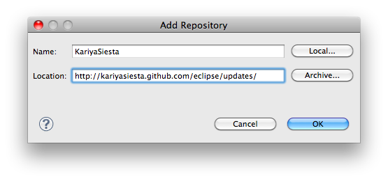
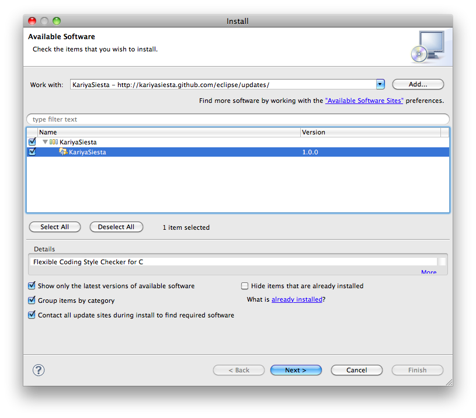

インストール方法¶
Windows OS をお使いの場合¶
KariyaSiesta の動作には以下のソフトウェアが必要です。
Cygwin は、devel カテゴリのアプリケーションをすべてインストールしてください。 また、Windows の環境変数 PATH に Cygwin の bin ディレクトリを追加してください。
それ以外の OS をお使いの場合¶
Help -> Install New Software をクリックします。 Add... をクリックします。
表示されたダイアログに以下の情報を入力します。
- Name:
- KariyaSiesta
- Location:
- http://kariyasiesta.github.com/eclipse/updates/
KariyaSiesta をチェックして、 Next をクリックします。
途中、証明書関係の確認ダイアログが表示された場合には、 OK をクリックしてください。
Eclipse の再起動を促すメッセージが表示されますので、 Restart Now をクリックしてください。
以上で、KariyaSiesta のインストールは完了です。
インストール後の設定¶
インストール後に以下の設定が必要です。 本設定はワークスペース毎に設定が必要です。
Preferences をクリックし、 KariyaSiesta をクリックします。 SAPID_DEST に [Sapid をインストールしたディレクトリ] を入力してください。